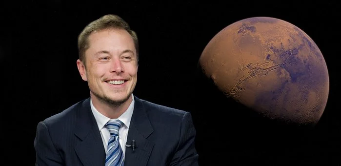

एलोन मस्क
दुनिया के सबसे दौलतमंद आदमियों में इनका नाम सबसे पहले नंबर पे बेसुमार है। आज हम इनके बारे मैं दिलचस्प बातें जानेंगे।
अगले कुछ मिनटों में हम पाइथन लैंग्वेज के बारे में जानेंगे -
एलोन मस्क का जन्म -
उनका जन्म 28 जून , 1971 में प्रिटोरिआ , ट्रांसवाल , साउथ अफ्रीका में हुआ था। उनकी माता का नाम माए मस्क था और वह पेशे से मॉडल और डायटीशियन थी। उनके पिता का नाम एरोल मस्क था वह पेशे से एलेक्ट्रोमेचानिकल इंजीनियर , पायलट और सैलोर थे। उनके छोटे भाई का नाम किम्बल(जन्म 1972)था। उनकी सबसे छोटी बहन का नाम टोस्का(जन्म 1974) था। 1980 में जब उनकी माँ और उनके पिता का तलाख हो गया तो वह अपने पिता के साथ रहने चले गए।
एलोन मस्क की स्कूली बातें -
एलोन मस्क जब छोटे थे तब उन्हें स्कूल में सब परेशान करते थे ,हमेशा एलोन मस्क का मजाक करते थे। यही नहीं एलोन मस्क से बड़े बच्चे हमेशा एलोन मस्क को तंग करते और उसे पीटते थे। बड़े लड़के एलोन मस्क को ढुढ़के उसे मारते थे , इतना ही नहीं एक बार एलोन को सीढ़ियों से निचे गिरा दिया गया था। एलोन का कोई दोस्त नहीं था , मगर वह अपना पूरा समय किताबे पढ़ने में लगाते थे। उनको उनकी किताबो का पूरा सहारा था। एलोन बहुत शांत लड़के थे। उनको एक बार इतना मारा था की वह बेहोश हो गए थे।
एलोन का बचपन -
एलोन पुरे दिन किताबे ही पढ़ा करते थे। एलोन ने 10 साल की उम्र से ही टेक्नोलॉजी में रस लेना शुरू कर दिया था। एलोन ने १२ की उम्र में प्रोग्रम्मिंग लैंग्वेजेज सीखना शुरू कर दिया था। उन्होंने तभी एक वीडियो गेम भी बनाई थी जो एक कंपनी उनसे 500 डॉलर में खरीदी थी।
केनेडा में एलोन-
17 की उम्र में उन्होंने साउथ अफ्रीका छोड़ दिया और आगे पढाई के लिए वह केनेडा चले गए। वह पर उन्होंने क्वीन'स यूनिवर्सिटी में दाखिला करवाया और उन्होंने 1992 में व्यापार और फिजिक्स को पढ़ना चालू किया कुछ समय बाद उन्हें फिजिक्स और इकोनॉमिक्स की बैचलर्स डिग्री मिल गई। वह 1995 में एलोन कैलिफ़ोर्निया गए थे , और पीएचडी एप्लाइड फिजिक्स मटेरियल साइंस से पीएचडी लेने के लिए गए थे। लेकिन उसे दो दिन में ही छोड़ दिया क्योकि वह एंटरप्रेन्योर बनना चाहते थे। 2002 में उनको USA की नागरिकता मिल जाती है। इनकी स्पेस के बारे में ज्यादा रूचि रही है।
जस्टिन विल्सन -
जस्टिन विल्सन एलोन मस्क की पहली बीवी थी जिन्हे वे क्वीन'स यूनिवर्सिटी में मिले थे। वह पेशे से राइटर थी। फिर एलोन ने जस्टिन विल्सन से शादी करली , उनके 5 बेटे हुए उनमे से 2 जुड़वाँ थे। 2008 में किसी कारण से इनके तलाख हो जाते है।
X.COM -
1995 में उन्होंने ZIP2 कंपनी चालू की एलोन को कंपनी का चेयरमैन बनना था लेकिन बोर्ड ऑफ़ डायरेक्टर्स ने इसे नकार दिया। बादमे इस कमपनी को कॉम्पैक्ट नामक एक कंपनी ने 307 US मिलियन डॉलर में खरीद लिया। तब को एलोन 22 मिलियन US डॉलर मिले थे। मार्च 1999 में इन्होने x.com बनाई जो बादमे PAYPAL के नाम से जानी जाती है। बादमे X.COM को eBay ने खरीद लिया था। एलोन को तब 165 मिलियन US डॉलर मिले थे।
एलोन के सपने -
एलोन मस्क ने एक लघु प्रायोगिक ग्रीनहाउस का सपना देखना शुरू कर दिया था जो कि वह मंगल पर उतर सकता था। ग्रीनहाउस, जिसे उन्होंने "मार्स ओएसिस" कहा था, उसमें फसलें होंगी और उम्मीद थी है अंतरिक्ष में सार्वजनिक रुचि फिर से जाग जाएगी। एलोन मस्क को मंगल ग्रह पर colonization करनी है , वह चाहते है की पृथ्वी के समाप्त होने से पहले इंसान अपना दूसरा घर ढूंढले। इसी के चलते उन्होंने 2002 में स्पेस X नामक कंपनी बना डाली जो इंसानो को स्पेस में ट्रेवल कहती है। इतनाही नहीं उन्होंने ऐसे रॉकेट्स का अविष्कार किया जो स्पेस में कई बार ट्रेवल कर सकते है। हलाकि पहले रॉकेट सिर्फ स्पेस में जा सकता था उसके बाद उसका कोई काम नहीं बचता था। लेकिन एलोन की कंपनी ने ऐसे रॉकेट का निर्माण किया जो स्पेस में कई बार ट्रेवल कर सके जिससे स्पेस में आने जाने का खर्चा भी बहुत काम हो गया इसमें अब हमारे जैसे साधारण इंसान भी जा सकते है।

स्पेस X और रूस में एलोन मस्क -
इन्होने जब मंगल पर जानेका सपना देखा तो वह बादमे स्पेस के बारे में रिसर्च करने लगे और उन्होंने स्पे के बारे में लिखी हुई कई किताबे पढ़ डाली। अब एलोन के पास पैसे भी थे तो वह रूस में रॉकेट्स बनाने का सामान लेने गए और उनकी वहांके वैज्ञानिको से बात हुई तो रूस के वैज्ञानिको ने एलोन का मजाक उड़ाया और उन्हें सामान न दिया। इससे एलोन मस्क नाराज हो गए और उन्होंने खुदकी कंपनी शुरू करने का सोच लिया। फिर उन्होंने 2001 सब कुछ कैलकुलेट किया और 2002 में खुदकी कंपनी शुरू करदी जिसे आज लोग स्पेस X के नाम से जानते है। स्पेस X के पहले तीन रॉकेट लांच होते ही फट जाते है। फिर भी एलोन हार नहीं मानते वह अपना सब कुछ दाव पर लगा देते है। और 4TH रॉकेट लांच की तैयारी करते है। बादमे स्पेस x को बड़े बड़े प्रोजेक्ट्स मिलने लगे।
आर्टिफीसियल इंटेलीजेन्स पे एलोन के विचार -
एलोन का यह कहना है की आर्टिफीसियल इंटेलिजेंस 3rd विश्व युद्ध का कारण बन सकती है। तो इससे हमको बचके रहना चाहिए। एलोन कहते है। आर्टिफीसियल इंटेलिजेंस हमारे व्यवसायों पर अपना हक़ जमा लेगी। एलोन मस्क ने इंसानो को इस चीज से बचने के लिए कहा है। एलोन का कहना है की हमें पहले A.I के बारे में जान लेना चाहिए वर्ण यही हमारे लिए भविस्य में खतरा साबित हो सकता है।
आपका यहाँ तक पढ़ने के लिए शुक्रिया जल्द ही इसका दूसरा भाग आ रहा है। बने रहिए हमारे साथ।आशा करते हे आपको हमारे ब्लॉग को पढ़के ज्ञान मिला होगा , हमारा यही प्रयास होता है की कैसे सरल भाषा में लोगो को ज्ञान दिया जाए।